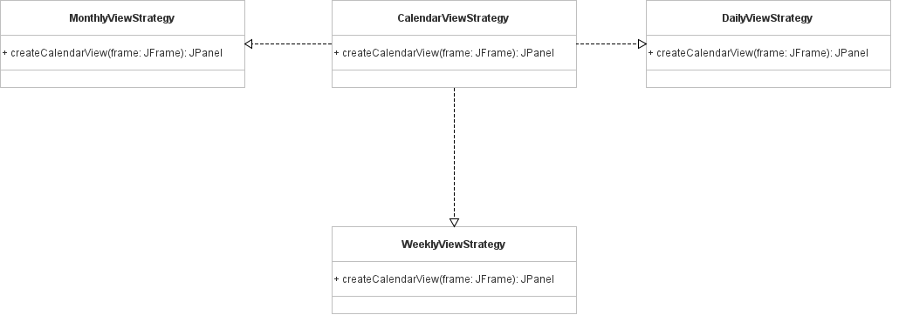
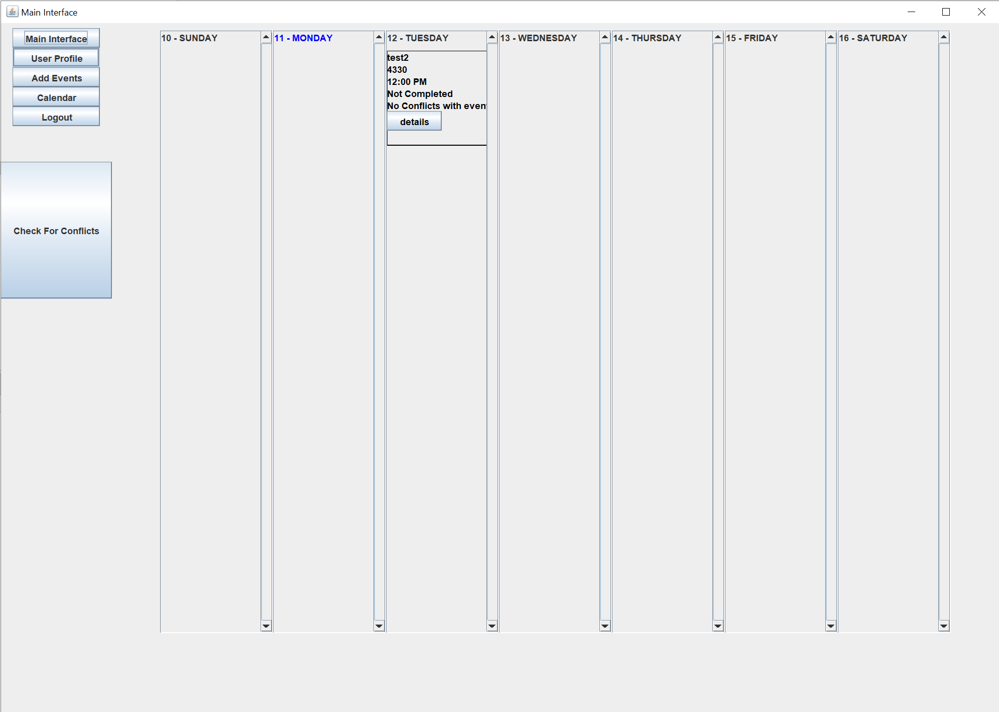

Project Overview
"The application is a daily planner/calendar utilized to add, remove, edit, and organize events assigned by a registered user. The application has a main interface that allows users to track the events of the current day in detail and also view the title of various events occurring in the current week."
My Role & Contributions
As a key developer on the team, I was responsible for implementing core application logic and UI components using the Java Swing GUI toolkit. I focused on applying Object-Oriented Design principles to create a modular and maintainable codebase. My contributions included developing the strategy for the daily and monthly calendar views, implementing the event creation window, and ensuring data persistence through Java Serialization.
Key Features
- User Authentication: Secure user login and account creation with unique username validation.
- Event Management: Users can add, edit, and remove events with details like title, date, time, priority, and description.
- Multiple Calendar Views: The application provides daily, weekly, and monthly calendar views to visualize schedules.
- Conflict Detection: The system automatically checks for and alerts users to scheduling conflicts between events.
- Data Persistence: User accounts and event data are saved locally using Java Serialization, allowing data to persist between sessions.
Application Architecture
We designed the application using core OOP principles. A key part of the architecture was the implementation of the Strategy design pattern to handle the different calendar displays (daily, weekly, and monthly). The UML diagram below illustrates how this pattern allowed us to create interchangeable view strategies, making the code more modular and easier to extend.
Application in Action
Here is a screenshot of the main user interface, showing the weekly calendar view and the daily event list. The interface was built using the Java Swing toolkit to create a responsive and intuitive desktop experience.
